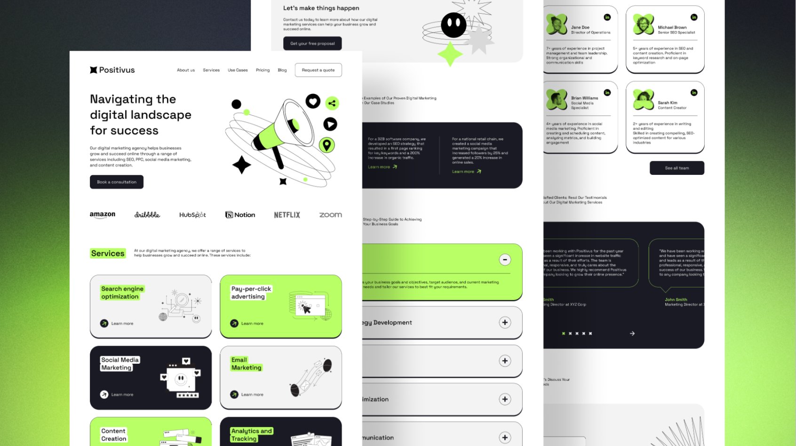
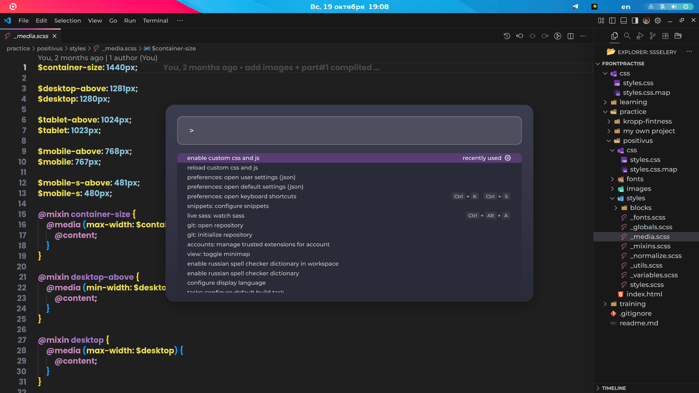
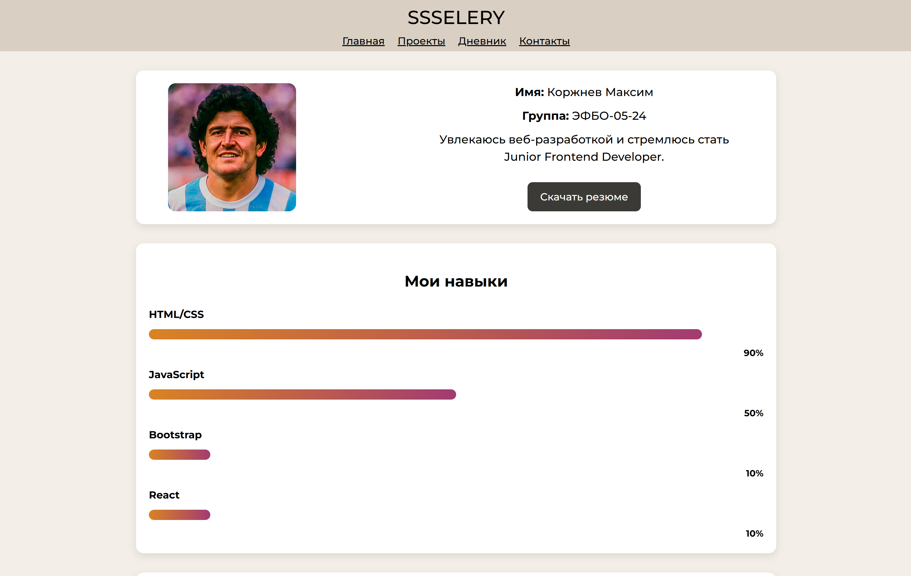
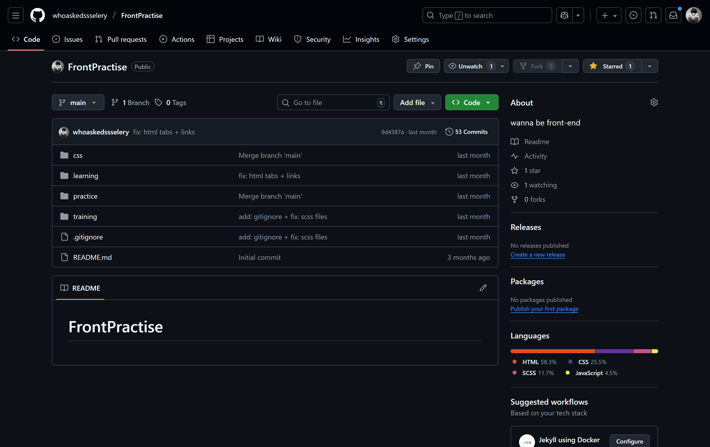

Мои проекты
Полная коллекция учебных и личных работ.

Landing Page
Одностраничный сайт для бренда. Адаптивная верстка и плавные анимации.

Customization Repo
Репозиторий с инструкцией по кастомизации Ubuntu и конфигурации рабочего окружения.

Portfolio Website
Личный сайт-портфолио на SCSS и компонентной структуре. Полностью адаптивен.

FrontPractise
Учебный репозиторий с материалами и кодом по HTML, CSS, SCSS и JS.